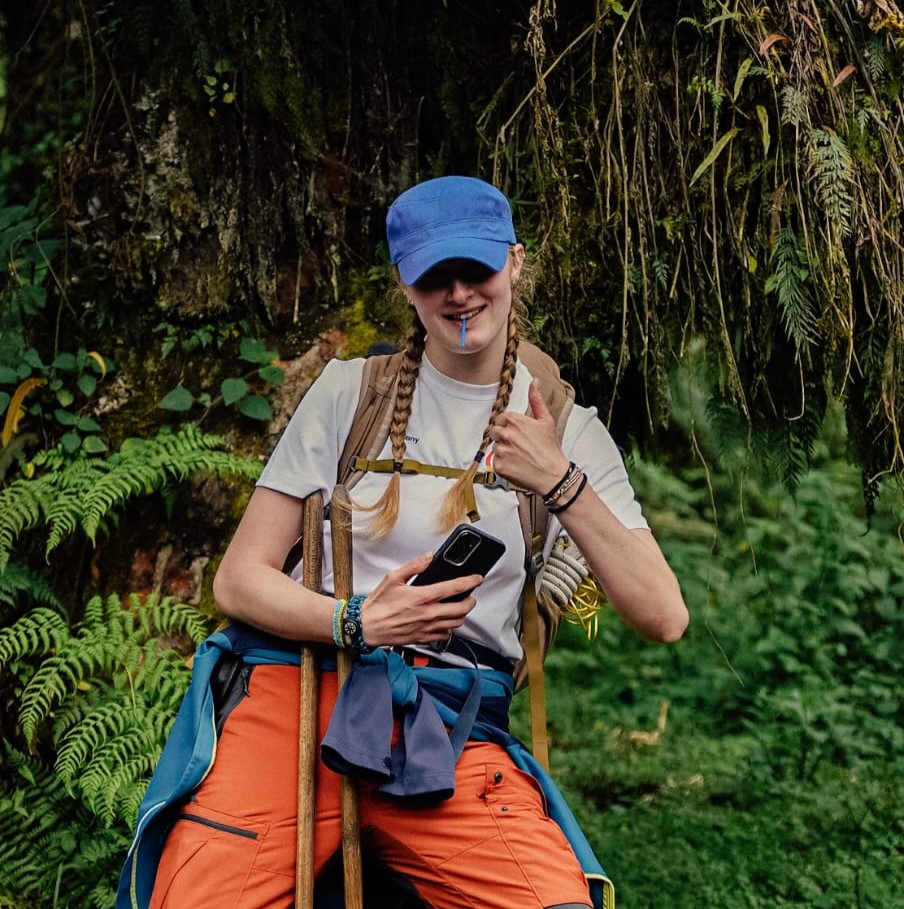

Theorie und Wirkung verbinden.
Ich untersuche Systeme, um Probleme dort zu lösen, wo es am meisten zählt.
Von Bionik in Bremen über Feldforschung in der Arktis und insgesamt drei Jahren Arbeit in kulturellen und technischen Kontexten auf drei Kontinenten habe ich gelernt, dass sinnvolle Lösungen aus Verständnis entstehen. Nicht aus von außen auferlegter Expertise, sondern aus der Zusammenarbeit mit Menschen, die ihre eigenen Systeme kennen. Mein MSc in Medizintechnik an der KTH bildet die technische Grundlage für diese Art partnerschaftlicher Arbeit, in welchen Kontexten auch immer sie sich als spannend erweisen.
Neugier und Widerstandsfähigkeit öffnen Türen. Einen Ort tief genug zu verstehen, um sinnvoll etwas beizutragen, und die Disziplin, Dinge zu Ende zu bringen. Das schafft echte Veränderung.
Meine Geschichte
